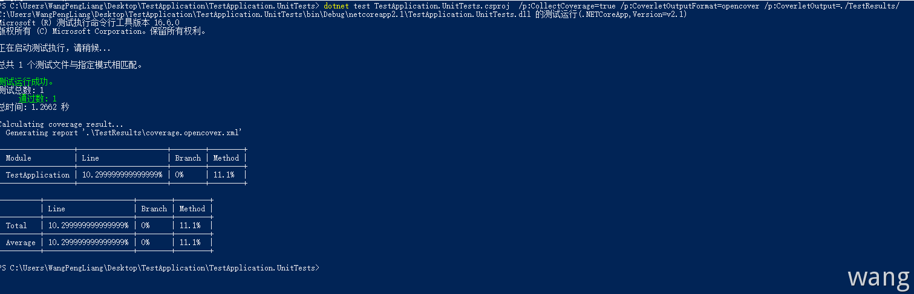

常见测试类型
- 单元测试
- 集成测试
- Web测试
- 负载测试
- 其他
依赖倒置原则(DIP）
很多情况下,一个类或者是方法它会依赖一些外部组件，如其他开发写的代码、第三方类库、数据库、网络等，当被测试的代码与这些组件紧耦合时，这段代码将可能是不可测的。如一个方法中依赖一个数据库组件去访问数据库，那么在执行这个方法时，必然要与数据库交互，如果没有数据库，那么该方法就无法运行。所以单元测试不仅是对代码逻辑进行检查，同时还对整个代码结构有所限制，面向对象编程时应当遵循“依赖倒置”原则，模块应该依赖抽象，抽象不应该依赖实现。并且所依赖的抽象，应该显示的通过构造或者方法参数进行暴露，让组件的使用者对组件的依赖一目了然,在单元测试时为了屏蔽这些抽象依赖，不同测试框架中提供了stub、mock、fake 等方式对抽象进行模拟，以便于代码能够正常执行。
单元测试
软件应用程序有多种类型的测试。 其中包括集成测试、Web 测试、负载测试和其他测试。 “单元测试”用于对软件中的最小可测试单元进行检查和验证。 单元测试仅测试开发人员控件内的代码。 它们不测试基础结构问题。 基础结构问题包括数据库、文件系统和网络资源。
编写单元测试时，尽量不要引入基础结构依赖项。这些依赖项会降低测试速度，使测试更加脆弱，应将其保留供集成测试使用。 可以通过遵循Explicit Dependencies Principle（显式依赖项原则）和使用Dependency Injection（依赖项注入）避免应用程序中的这些依赖项。还可以将单元测试保留在单独的项目中，与集成测试相分隔。 这可确保单元测试项目没有引用或依赖于基础结构包。
单元测试的好处
- 比执行功能测试节省时间
- 防止回归：新功能上线时可通过单元测试来确保之前存在的功能正常运行不会破坏现有功能
- 减少耦合：当代码紧密耦合时，可能很难进行单元测试，如果不为代码编写单元测试，耦合可能就不太明显了
优质单元测试的特征
- 快速： 对成熟项目进行数千次单元测试，这很常见。 应花非常少的时间来运行单元测试
- 独立： 单元测试是独立的，可以单独运行，并且不依赖文件系统或数据库等任何外部因素
- 可重复：运行单元测试的结果应该保持一致，也就是说，如果在运行期间不更改任何内容，总是返回相同结果
- 自检查： 测试应该能够在没有任何人工交互的情况下，自动检测测试是否通过
代码覆盖率
高代码覆盖率百分比通常与较高的代码质量相关联，但该度量值本身无法确定代码的质量。 设置过高的代码覆盖率百分比目标可能会适得其反，高代码覆盖率百分比不代表代码质量就高， 它仅仅表示单元测试所涵盖的代码量。
代码覆盖率工具有两种类型
- 数据收集器： 数据收集器监视测试执行并收集有关测试运行的信息。 它们以各种输出格式（例如
XML和JSON）报告收集的信息 - 报表生成器： 使用从测试运行收集的数据生成报表，通常为带样式的
HTML
若要通过 Coverlet 获得代码覆盖率，现有单元测试项目必须具有相应的包依赖项，或者依赖于全局工具和对应的 coverlet.console NuGet 包，代码覆盖率是单元测试运行的代码量（行、分支或方法）的度量值，企业版的VS自带了代码覆盖率分析工具，参考：
- https://docs.microsoft.com/en-us/visualstudio/test/using-code-coverage-to-determine-how-much-code-is-being-tested
- https://github.com/Microsoft/vstest-docs/blob/master/docs/analyze.md#coverage
.dotnet Core（暂不支持.NetFramework）获取代码覆盖率的大致步骤：coverlet(数据收集器)=>ReportGenerator(报表生成器)=>代码覆盖率报告。
单元测试框架
dotnet core 中常用的单元测试的框架有MSTest、NUnit和xUnit.net，使用方法都非常相似，都是通过特性标记的方式声明测试方法，然后在方法中使用断言Assertions来判别方法执行结果是否达到预期。
MSBuild
使用 MSBuild 方式运行测试并生成指定名称的测试结果文件，输出到指定目录：
1 | dotnet test TestApplication.UnitTests.csproj /p:CollectCoverage=true /p:CoverletOutputFormat=opencover /p:CoverletOutput=./TestResults/ |

这里有个问题：对使用依赖注入的项目这里获取的覆盖率为0，详情：
- https://github.com/coverlet-coverage/coverlet/blob/master/Documentation/KnownIssues.md
- https://github.com/coverlet-coverage/coverlet/issues/922
VSTest
使用 coverlet 命令生成覆盖率xml：
1 | dotnet test TestApplication.UnitTests.csproj --collect:"XPlat Code Coverage" |
Reportgenerator
使用 reportgenerator 命令将xml文件渲染成Html，因为Msbuild 和 VsTest 方式生成的目录结果有所不同所以渲染命令也有所不同。
MSBuild
1 | reportgenerator "-reports:./TestResults/*.xml;""--targetdir:D:\RunTime\TestReport" -reporttypes:Html |
VSTest
1 | reportgenerator "-reports:./TestResults/*/*.xml" "--targetdir:D:\RunTime\TestReport" -reporttypes:Html |
合并渲染
找到xml文件路径，-reports 命令中以;分割即可。
1 | reportgenerator "-reports:TestApplication.UnitTests/TestResults/*.xml;TestApplication.IntegrationTests/TestResults/*.xml;" "--targetdir:D:\RunTime\TestReport" -reporttypes:Html |
注意当前的工作目录
参考：
- https://www.cnblogs.com/cgzl/p/9326127.html
- https://github.com/coverlet-coverage/coverlet
- https://github.com/danielpalme/ReportGenerator
测试可重复性
- 使用
COM+自动事务(TestFixture) - 使用数据清理来保证测试用例的独立和可重复性
TestInitialize/TestCleanup
Mock
面向对象编程应该显式依赖抽象，单元测试时应屏蔽依赖的影响(无论是依赖还未实现，或者实现的依赖会阻碍代码执行)，为了满足这一需求出现了Mock、Fake等方式，其原理就是创建一个"假"的"空"的依赖，并用其替代真实依赖，以确保代码能够运行。
1 | public class OrgPublisherServiceTests : TestBase |
注意
单元测试仅能保证软件的最小可执行单元是正确的，真正的软件是由这些最小可执行单元组成的一个整体，单元的正确性无法保证整体的正确性。